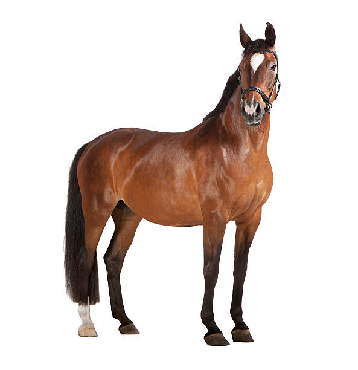

Overview
The horse(Equus caballus) is a domesticated, one-toed, hoofed mammal. It belongs to the taxonomic family Equidae and is one of two extant subspecies of Equus ferus. The horse has evolved over the past 45 to 55 million years from a small multi-toed creature, close to Eohippus, into the large, single-toed animal of today. Humans began domesticating horses around 4000 BCE, and their domestication is believed to have been widespread by 3000 BCE. Horses in the subspecies caballus are domesticated, although some domesticated populations live in the wild as feral horses. These feral populations are not true wild horses, which are horses that never have been domesticated and historically linked to the megafauna category of species. There is an extensive, specialized vocabulary used to describe equine-related concepts, covering everything from anatomy to life stages, size, colors, markings, breeds, locomotion, and behavior.
